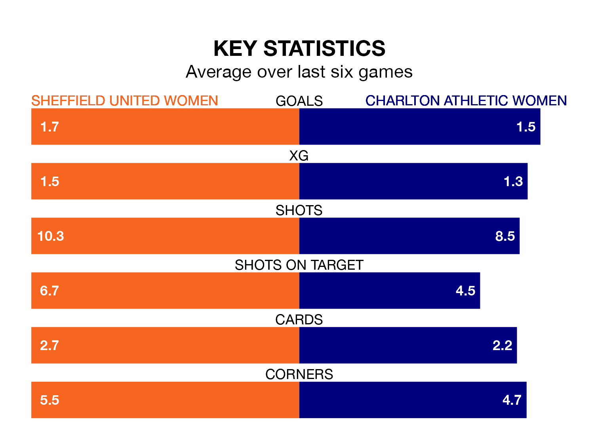

Charlton Athletic Women face Sheffield United Women on Sunday seeking to protect their formidable unbeaten run in the FA Women's Championship.
Charlton Athletic are unbeaten in eight, with six wins and two draws, ahead of the 2pm kick-off.
They face a Sheffield United team who have won four and lost four over the same number of games.
Charlton Athletic are second in the table after 11 games, of which they have won six and drawn four, earning 22 points.
Sheffield United are six places behind the away side in eighth, with four wins and one draw putting them on 13 points.
With 13 goals in 10 games so far this season, the Blades are scoring at below the league average rate with 1.3 goals per game. And they are conceding at an average rate, letting in 14 goals at a rate of 1.4 per game.
Charlton Athletic, meanwhile, are average scorers, with 1.4 goals per game. They have conceded 0.7 goals per game.
In Isobel Goodwin, the hosts have one of the league's most on-form strikers so far this season. She has notched seven goals in 10 appearances, to sit second in the scoring charts.
Her goal rate of one every 129 minutes is quicker than that of Kayleigh Green, Charlton Athletic's top scorer with a goal every 142 minutes, and a total of six goals in 10 games.
In the last three years, Sheffield United and Charlton Athletic have played each other on six occasions. Sheffield United won two of them, Charlton Athletic one, and they drew three times.
On average, the Blades scored 0.5 goals and Charlton Athletic 0.3 in those matches.
Their last meeting was on August 27, when they played out a 1-1 draw.
Sheffield United's last match was on November 19, a 3-1 win against Watford Women, with Goodwin (two) and Charlotte Fleming (own goal) getting the goals for the Blades.
Charlton Athletic drew 1-1 with Sunderland Women last time out, also on November 19, with Tegan McGowan on the scoresheet.
